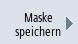

Sie haben die Möglichkeit, die im Fenster "NC/PLC-Variablen" vorgenommen Konfigurationen der Variablen in einer Maske zu speichern, die Sie bei Bedarf wieder laden können.
Masken bearbeiten
Ändern Sie eine geladene Maske, so wird diese durch einen * hinter dem Maskennamen gekennzeichnet.
Der Name einer Maske bleibt in der Anzeige übers Ausschalten hinweg erhalten.
Vorgehensweise
| | 1. | Sie haben im Fenster "NC/PLC-Variablen" für die gewünschten Variablen Werten eingegeben. |
 | 2. | Drücken Sie den Softkey ">>".
|
|  | 3. | Drücken Sie den Softkey "Maske speichern". Das Fenster "Maske speichern : Ablage wählen" wird geöffnet. |
 | 4. | Positionieren Sie den Cursor auf den Vorlagen-Ordner für Variablen-Masken, in dem Ihre aktuelle Maske abgelegt werden soll und drücken Sie den Softkey "OK". Das Fenster "Maske speichern: Name" wird geöffnet. |
| | 5. | Geben Sie den Namen für die Datei ein und drücken Sie den Softkey "OK". Eine Meldung in der Statuszeile informiert Sie, dass die Maske im angegeben Ordner gespeichert wurde. Existiert bereits eine Datei mit gleichem Namen, erhalten Sie eine Abfrage. |
| | 6. | Drücken Sie den Softkey "Maske laden". Das Fenster "Maske laden" wird geöffnet und zeigt die Vorlagen-Ordner für Variablen-Masken an. |
| | 7. | Wählen Sie die gewünschte Datei und drücken Sie den Softkey "OK". Sie kehren in die Variablenansicht zurück. Es wird die Liste aller festgelegten NC- und PLC-Variablen angezeigt. |